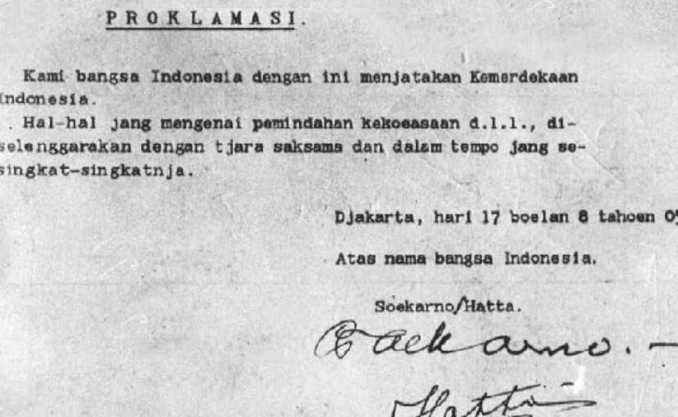
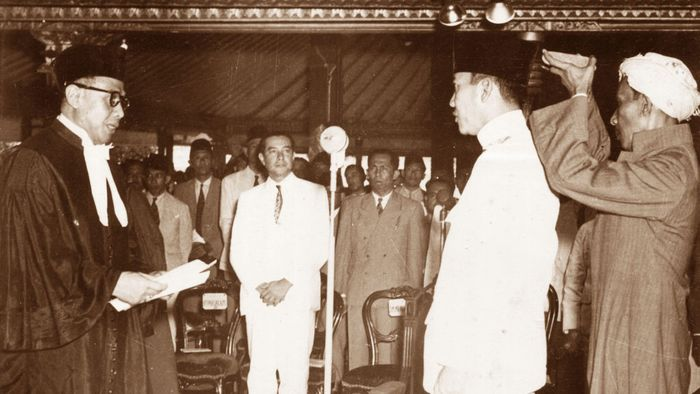
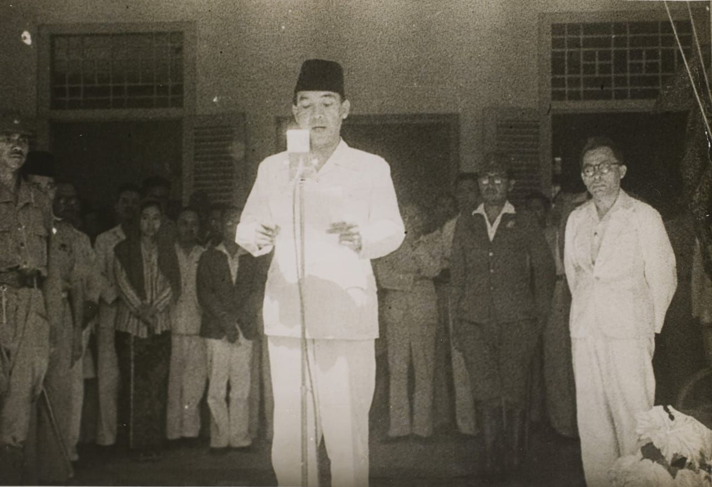

Indonesia Merdeka
Sejarah Proklamasi Kemerdekaan Indonesia
Sejarah Proklamasi Kemerdekaan Republik Indonesia bisa dikatakan cukup panjang. Namun, pada intinya sejarah Proklamasi Kemerdekaan Republik Indonesia terbagi menjadi tiga bagian penting. Bagian pertama, menjelaskan pertemuan di Dalat. Bagian kedua, menjelaskan pertemuan Soekarno/Hatta dengan Jenderal Mayor Nishimura dan Laksamana Muda Maeda. Dan bagian ketiga, Peristiwa Rengasdengklok.
Pada saat itu, sebelum Soekarno membacakan teks Proklamasi pada tanggal 17 Agustus 1945, banyak sekali peristiwa yang terjadi yang melatarbelakangi terjadinya pembacaan Proklamasi Kemerdekaan Republik Indonesia, salah satu peristiwa tersebut adalah dijatuhkannya bom di kota Hiroshima di tanggal 6 Agustus 1945 dan tanggal 9 Agustus 1945 di kota Nagasaki. Semua bom tersebut dijatuhkan di Amerika dengan tujuan Jepang menyerah kepada Amerika Serikat. Pada momen kekosongan kekuasaan inilah Indonesia tidak menyia-nyiakan kesempatan untuk memproklamasikan kemerdekaannya.
Peristiwa Sebelum Proklamasi Kemerdekaan Indonesia
Sebelum Indonesia mencapai Proklamasi, Indonesia melalui beberapa peristiwa sebagai berikut :
Pada Tanggal 12 Agustus 1945, tiga tokoh nasional, yang terdiri dari Dr. Radjiman Wedyodiningrat, Ir. Soekarno, dan Drs. Mohammad Hatta memenuhi undangan dari Jenderal Terauchi di Dalat (Vietnam Selatan). Jenderal Terauchi merupakan Panglima tentara besar tentara Jepang di Asia Tenggara.
Pada malam 16 Agustus 1945 Soekarno-Hatta, Maeda, dan penerjemah Miyoshi mendatagi rumah Mayor Jenderal Nishimura untuk mengadakan pertemuan di tengah pertemuan tersebut Nishimura memberitahukan kepada Soekarno dan Hatta bahwa keadaan sekarang sudah berubah
Peristiwa Rengasdengklok terjadi pada 16 Agustus 1945 pukul 04.00 WIB. Pasca melakukan rapat di Cikini 71, para utusan golongan muda menghadap ke Bung Karno dan Bung Hatta pada 15 Agustus 1945 malam. Agenda para utusan golongan muda itu adalah mendesak supaya proklamasi diadakan pada 16 Agustus 1945

Pembacaan Naskah Proklamasi
Teks proklamasi disusun oleh Soekarno, Hatta dan Soebardjo di rumah Laksamana Maeda pada tanggal 17 Agustus 1945 pukul 03.00 WIB. Setelah perumusan teks Proklamasi selesai, teks kemudian diserahkan kepada Sayuti Melik untuk diketik. Setelah itu, teks ditandatangani kembali oleh Soekarno.
Pembacaan teks proklamasi dilakukan pada 17 Agustus 1945, pukul 10.00 WIB, di Jalan Pegangsaan Timur No. 56 (Proklamasi No. 5, Jakarta Pusat). Pembacaan teks Proklamasi Kemerdekaan diumumkan oleh BM Diah dan Jusuf Ronodipuro melalui radio, surat kabar, telegram, dan lisan. Pembacaan teks Proklamasi Kemerdekaan juga diabadikan oleh pewarta yang bernama Frans dan Alex Mendoer dari IPPHOS.
Naskah Proklamasi
Pembacaan Proklamasi Kemerdekaan Indonesia merupakan suatu hal yang berarti sehingga memberikan arti penting bagi bangsa Indonesia. Berikut beberapa arti penting Proklamasi Kemerdekaan Indonesia bagi bangsa Indonesia.
- Merupakan puncak perjuangan bangsa Indonesia setelah berjuang selama berpuluh-puluh tahun sejak 20 Mei 1908.
- Sebagai informasi bahwa negara Indonesia telah melepaskan diri dari kurungan penjajahan bangsa lain.
- Sebagai titik balik untuk mencapai tujuan nasional bangsa dan sebagai titik awal lahirnya Negara Kesatuan Republik Indonesia (NKRI).
- Sebagai titik awal penghentian segala bentuk penjajahan yang terjadi di Indonesia. Merupakan sumber hukum bagi pembentukan NKRI (Negara Kesatuan Republik Indonesia) dari Miangas sampai Rote dan dari Sabang sampai Merauke.
- Sebagai titik awal landasan cita-cita negara Indonesia karena cita-cita bangsa dan negara Indonesia tercantum di dalam pembukaan UUD 1945.
- Dijadikan sebagai alat hukum internasional untuk menyatakan kepada rakyat dan seluruh dunia bahwa bangsa dan negara Indonesia sudah lepas dari jajahan dan sudah memegang hak kemerdekaan.